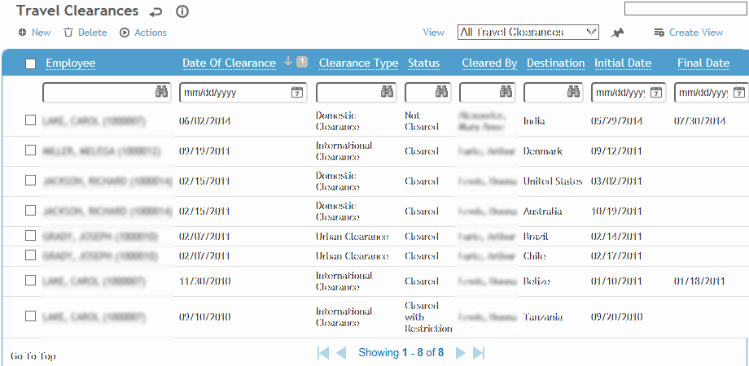
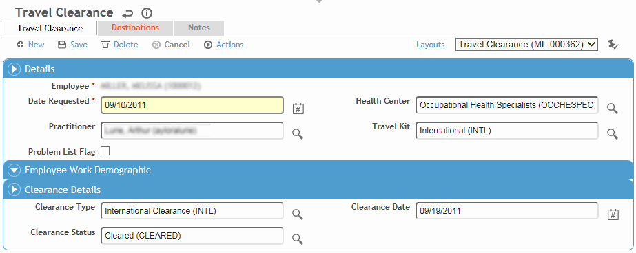
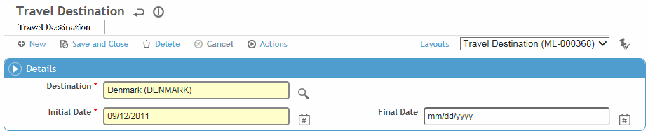

In the Occupational Health menu, click Travel and use the provided fields to generate a list of travel clearance requests.

Select a record from the list by clicking on the employee name, or click New to record a new clearance request.

Select the employee name, if not already selected.
Enter the Date Requested and identify any Travel Kit provided to the employee, if required (for example, an International kit may contain anti-malarial medication, insect repellent, sunscreen, basic first aid supplies, etc.).
Indicate if the clearance should be included on the Problem List (see Working with the Problem List).
To view any immunization recalls that are in the future, as well as any Schedule Activity recalls that are linked to the Immunization module and that are due or overdue for that employee, choose Actions»Immunization Plan. For more information, see Viewing an Immunization Plan.
Select the Clearance Type and Status. If the Status chosen is Cleared with Restrictions, document the restrictions on the Notes tab.
If the employee has received the necessary immunizations and can be cleared, continue with the steps in Clearing an Employee for Travel; otherwise, click Save.
On the Destinations tab, click New to enter a destination.

Select the Destination and enter an Initial Date (and Final Date, if known).
Click Save.
The Notes tab allows you to record additional information that does not fit elsewhere in the form. For more information, see Adding Notes to a Form.
Use the Documents tab to link an external file to the record to provide easy access to the file (for more information, see Linking or Importing a Document).
The Letters tab allows you to view past letters or generate new letters to employees. Form letters are stored in the LettersTemplate look-up table. For information about creating letters, see Generating a Letter.